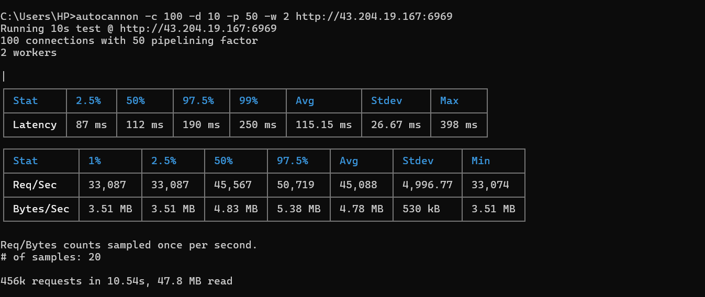

⚡ Fastify
Git: https://github.com/fastify/fastify
Fastify is a performance-focused alternative to Express. It showed a decent improvement, but still fell short of the top contenders.

Recently, I conducted a performance benchmark on four backend frameworks — Express,
Fastify, Brahma-JS (my own creation), and uWebSockets.js
(uws-js). The tests were conducted using autocannon directly against each
live-deployed API on a minimal EC2 t2.micro instance.
autocannon is a Node.js-based HTTP benchmarking tool, similar to wrk, designed to
generate high levels of concurrent requests.Surprisingly, Express ended up as the lowest performing candidate, while Fastify was slightly better. Brahma-JS and uWS were in a same league.
Git: https://github.com/expressjs/express
Express is well known for its simplicity, but it's not optimized for high concurrency or raw performance.
Git: https://github.com/fastify/fastify
Fastify is a performance-focused alternative to Express. It showed a decent improvement, but still fell short of the top contenders.
Git: https://github.com/Shyam20001/rsjs
Brahma-JS is my own minimalist, high-performance Node.js framework. It uses a lean architecture and async primitives. It performed impressively, rivaling even uWS.
Rust Tokio (async runtime) + Hyper (HTTP engine)napi-rs for seamless JS callbacksExpress/Hono while staying minimal

Git: https://github.com/uNetworking/uWebSockets.js
uWS is known for being one of the fastest web frameworks out there — built in C++ with Node.js bindings. Its performance remains stellar, though its ergonomics aren’t as friendly as others.

This test proves that raw performance isn’t always about using the most popular tool — thoughtful design and
minimal overhead in frameworks like Brahma-JS or uWS can bring massive benefits in constrained environments like
t2.micro.
Drop a star on the Brahma-JS GitHub repo if you're curious about its design or want to try it out!